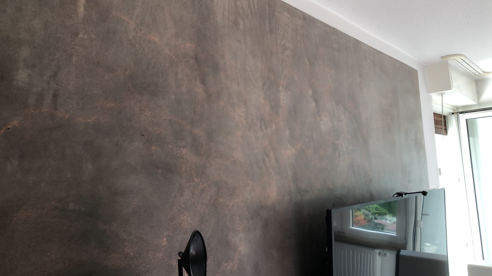
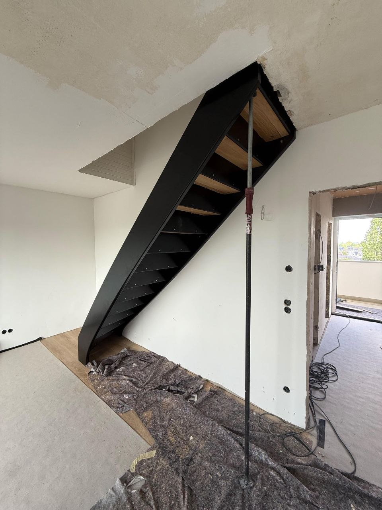
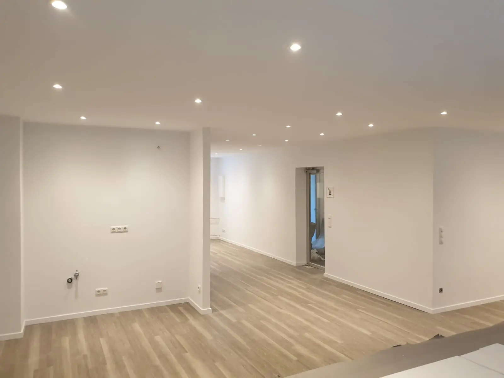
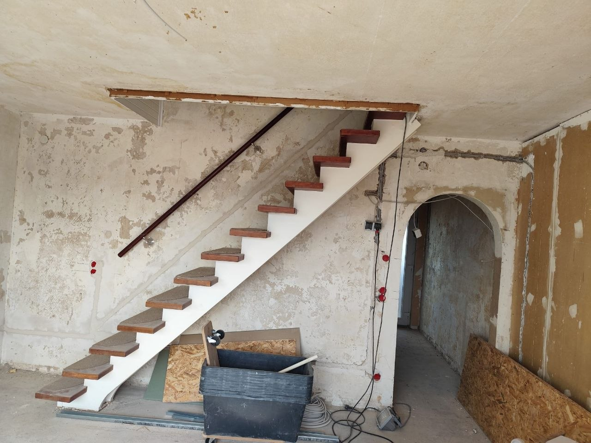

Sanierung & Innenausbau in Düsseldorf
Räume.
Fertig gedacht.
Von der ersten Wand bis zum letzten Bodenanschluss: Sydney Sanierung koordiniert, gestaltet und baut aus einer Hand.


Projekt StockumVom Rohbau zur Linie↗Klare Farben
Saubere Kanten
Kein Zufall
aus einer Hand
mit Timy Baran
in Düsseldorf
zur Abnahme
Was wir bauen
Ein Ansprechpartner.
Viele Gewerke.

Erst fertig
ist fertig.
Auf der Startseite zeigen wir bewusst Ergebnisse. Bauphasen und Details finden Sie dort, wo sie Kontext haben: in unseren Projektgeschichten.
Projekt Stockum
Eine Treppe.
Zwei Zustände.
Rohbau, Wandaufbau, Boden und die finale Schwarz-Holz-Treppe wurden als zusammenhängender Ausbau realisiert.Alle 31 Projektbilder
Der Ablauf
Klar bis
zur Abnahme.
- 01
Vor Ort verstehen
Wir prüfen Bestand, Maße, Anschlüsse und Ihre Prioritäten.
- 02
Sauber planen
Gewerke, Material und Reihenfolge werden vor dem Start abgestimmt.
- 03
Präzise umsetzen
Ein Ansprechpartner hält Ausführung und Kommunikation zusammen.
- 04
Fertig übergeben
Sie sehen das Ergebnis, nicht das Baustellenchaos.
Kundenstimmen
Sauber. Schnell.
Verlässlich.
„Terminabsprache und Beratung waren sehr gut und zuverlässig. Alle Termine wurden eingehalten und die Arbeiten sauber und schnell verrichtet.“
„Herr Baran und sein Team sind nicht nur super schnell und zuverlässig, sondern machen faire Preise.“
Vor dem ersten
Staubkorn.
Die wichtigsten Fragen vor einer Sanierung.
Übernimmt Sydney Sanierung mehrere Gewerke?
Ja. Innenausbau, Trockenbau, Böden, Fliesen, Putz und Wandgestaltung können als zusammenhängendes Projekt koordiniert werden.
Arbeiten Sie nur in Düsseldorf?
Der Schwerpunkt liegt in Düsseldorf und Umgebung. Ob Ihr Projekt im Einsatzgebiet liegt, klären wir direkt am Telefon.
Kann ich den Baufortschritt nachvollziehen?
Ja. Klare Absprachen und ein persönlicher Ansprechpartner sorgen dafür, dass Sie den nächsten Schritt kennen.
Übernehmen Sie auch einzelne Räume?
Ja. Vom Bad bis zur kompletten Wohnung wird der Umfang passend zum Bestand und Ziel geplant.
Wie starte ich eine Anfrage?
Am schnellsten telefonisch unter 0152 34346248 oder mit einer kurzen E-Mail inklusive Projektort und gewünschtem Umfang.
Ihr Projekt
Was soll
neu werden?
0152 34346248 ↗Timy BaranAltenbrückstraße
40227 Düsseldorfinfo@sydney-sanierung.de